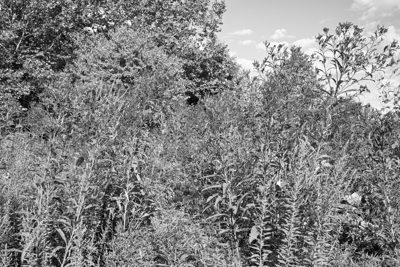
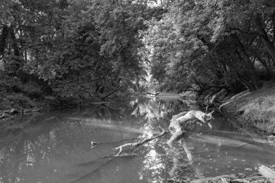
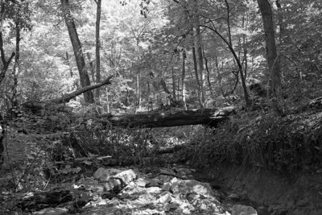
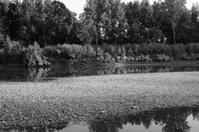

Public Lands Institute
Map
Archive
About
Otto Armleder Memorial Park
OH
August 2025

Otto Armleder Memorial Park 1 · 2025-08-26
_DSC0172.jpg

Otto Armleder Memorial Park 2 · 2025-08-26
_DSC0174.jpg

Otto Armleder Memorial Park 3 · 2025-08-30
_DSC0181.jpg
September 2025

Otto Armleder Memorial Park 4 · 2025-09-11
_DSC0328.jpg
← Glen Helen Nature Preserve
Bender Mountain Nature Preserve →